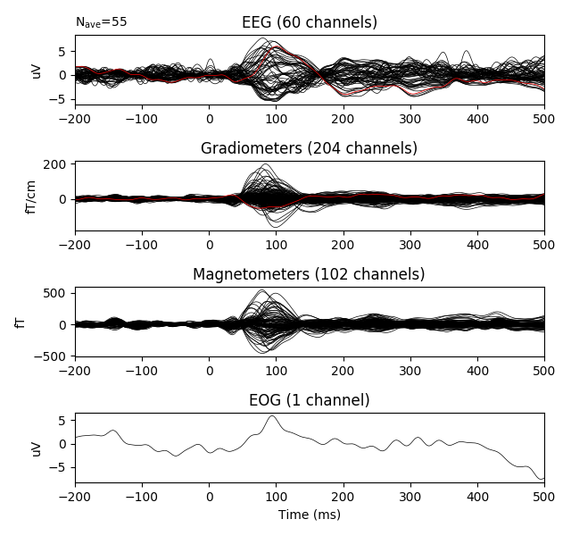

In short, data repair using spherical spline interpolation [1] consists of the following steps:
Spherical splines assume that the potential \(V(\boldsymbol{r_i})\) at any point \(\boldsymbol{r_i}\) on the surface of the sphere can be represented by:
where the \(C = (c_{1}, ..., c_{N})^{T}\) are constants which must be estimated. The function \(g_{m}(\cdot)\) of order \(m\) is given by:
where \(P_{n}(x)\) are Legendre polynomials of order n.
To estimate the constants \(C\), we must solve the following two equations simultaneously:
where \(G_{ss} \in R^{N \times N}\) is a matrix whose entries are \(G_{ss}[i, j] = g_{m}(cos(\boldsymbol{r_i}, \boldsymbol{r_j}))\) and \(X \in R^{N \times 1}\) are the potentials \(V(\boldsymbol{r_i})\) measured at the good channels. \(T_{s} = (1, 1, ..., 1)^T\) is a column vector of dimension \(N\). Equation (3) is the matrix formulation of Equation (1) and equation (4) is like applying an average reference to the data. From equation (3) and (4), we get:
\(C_{i}\) is the same as matrix \({\begin{bmatrix} {T_s}^{T} && 0 \\ T_s && G_{ss} \end{bmatrix}}^{-1}\) but with its first column deleted, therefore giving a matrix of dimension \((N + 1) \times N\).
Now, to estimate the potentials \(\hat{X} \in R^{M \times 1}\) at the bad channels, we have to do:
where \(G_{ds} \in R^{M \times N}\) computes \(g_{m}(\boldsymbol{r_i}, \boldsymbol{r_j})\) between the bad and good channels. \(T_{d} = (1, 1, ..., 1)^T\) is a column vector of dimension \(M\). Plugging in equation (5) in (6), we get
To interpolate bad channels, one can simply do:
>>> evoked.interpolate_bads(reset_bads=False)
and the bad channel will be fixed
| [1] | Perrin, F., Pernier, J., Bertrand, O. and Echallier, JF. (1989). Spherical splines for scalp potential and current density mapping. Electroencephalography Clinical Neurophysiology, Feb; 72(2):184-7. |
{kind=link}